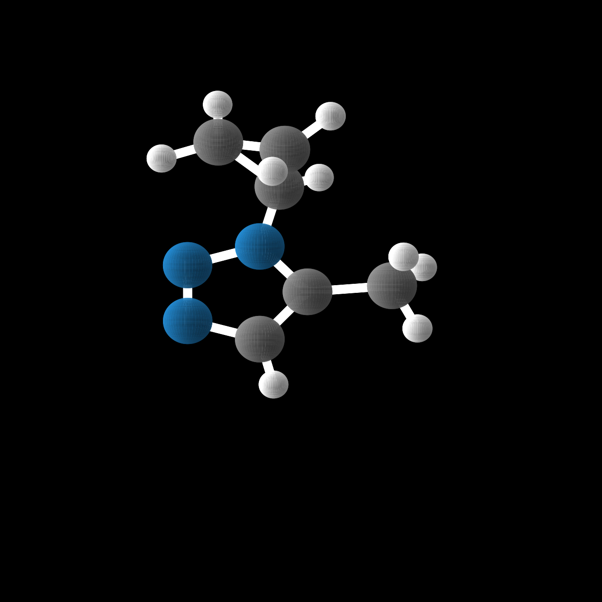
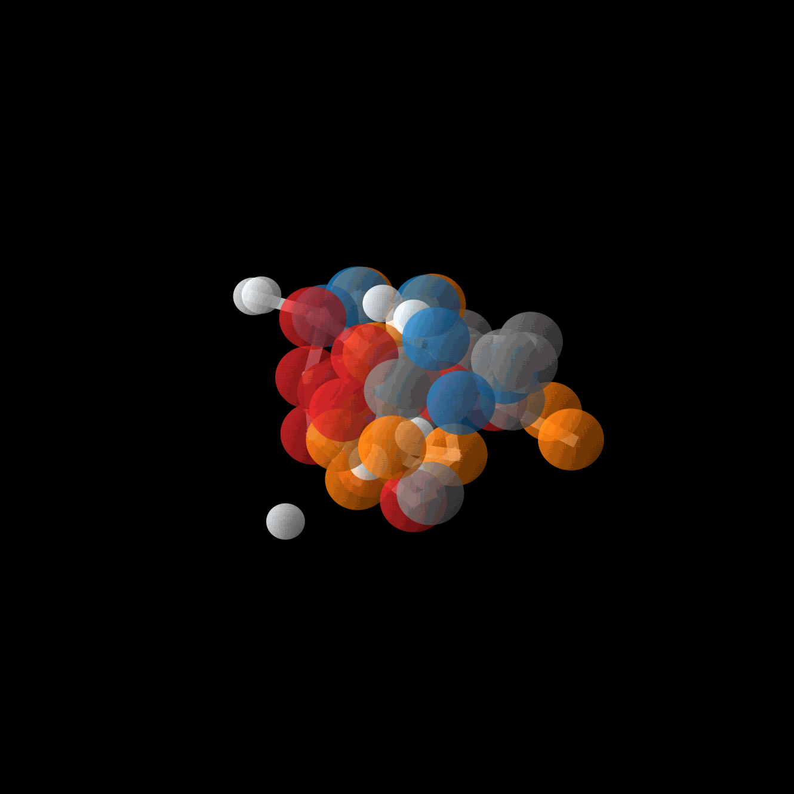
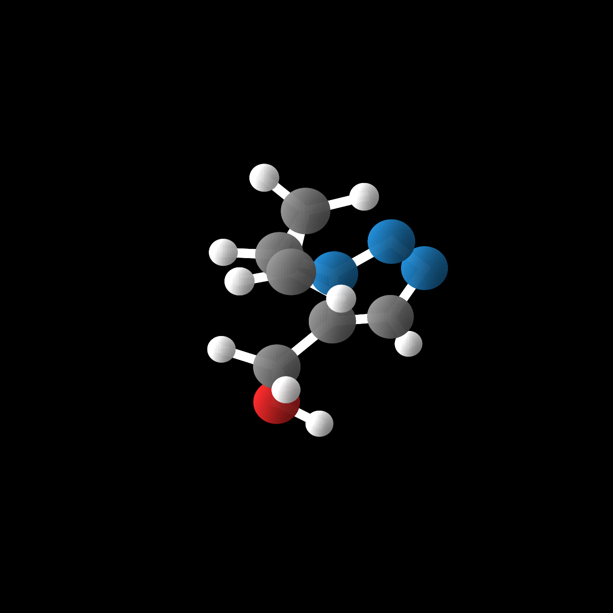

Generate what is desired without target domain data.
Demo

Target Molecule
(Unseen during the training).
Target Molecule Scaffold
(Unseen during the training).

Domain Adapative Generation.

Generated Molecule.